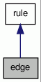

edge Class Reference
Class edge stores all information in a chart edge. More...
#include <chart.h>
Inheritance diagram for edge:

Collaboration diagram for edge:

Public Member Functions | |
| edge (const std::string &, const std::list< std::string > &, const int posgov) | |
| Constructors of the subclass edge. | |
| edge () | |
| const std::list< std::string > | get_matched () const |
| get matched part of the rule. | |
| const std::list< std::pair < int, int > > | get_backpath () const |
| get list of cells used to satisfy edge rule | |
| bool | active () const |
| Check if the edge is complete (inactive) or not. | |
| void | shift (int, int) |
| Advance the edge one position. | |
Private Attributes | |
| std::list< std::string > | matched |
| Part of the rule already matched. | |
| std::list< std::pair< int, int > > | backpath |
Detailed Description
Class edge stores all information in a chart edge.
Constructor & Destructor Documentation
| edge::edge | ( | const std::string & | , | |
| const std::list< std::string > & | , | |||
| const int | posgov | |||
| ) |
Constructors of the subclass edge.
| edge::edge | ( | ) |
Member Function Documentation
| bool edge::active | ( | ) | const |
Check if the edge is complete (inactive) or not.
| const std::list<std::pair<int,int> > edge::get_backpath | ( | ) | const |
get list of cells used to satisfy edge rule
| const std::list<std::string> edge::get_matched | ( | ) | const |
get matched part of the rule.
| void edge::shift | ( | int | , | |
| int | ||||
| ) |
Advance the edge one position.
Member Data Documentation
std::list<std::pair<int,int> > edge::backpath [private] |
std::list<std::string> edge::matched [private] |
Part of the rule already matched.
The documentation for this class was generated from the following file: